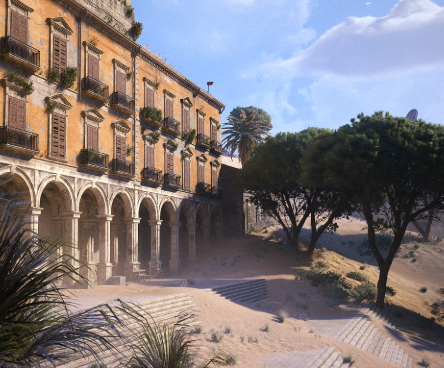
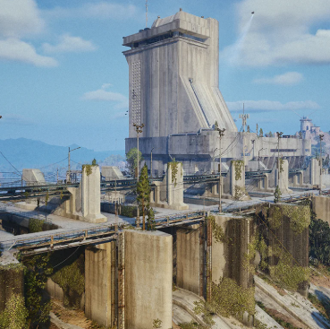

Dream Village Resort is a beautiful and peaceful vacation destination hidden between tall green mountains, quiet forests, and a large crystal-clear lake. The resort was designed to feel like a small village where guests can escape from their everyday routines and enjoy a relaxing environment surrounded by nature. Visitors can stay in cozy cabins, modern cottages, or larger vacation homes that overlook the lake. Each building has its own unique design, with colorful gardens, wooden porches, and large windows that allow guests to enjoy the scenery. Throughout the resort, there are many different activities for visitors to enjoy. During the day, guests can go kayaking on the lake, take long walks along the forest trails, or relax beside the outdoor swimming pool. There is also a small recreational area with games, sports courts, and picnic tables where families and friends can spend time together. For visitors who prefer a quieter experience, the resort has several peaceful gardens and benches scattered throughout the property where people can read, talk, or simply enjoy the scenery.The center of Dream Village Resort is a small town square surrounded by shops, restaurants, and colorful buildings. The main restaurant serves a variety of foods inspired by different places around the world, while the smaller cafés offer drinks, pastries, and snacks throughout the day. There is also a souvenir shop where guests can purchase handmade decorations, clothing, and other items to remember their trip. On certain evenings, the town square hosts live music, outdoor games, and small community events that bring everyone together.
Dream Village Resort is a beautiful and peaceful vacation destination hidden between tall green mountains, quiet forests, and a large crystal-clear lake. The resort was designed to feel like a small village where guests can escape from their everyday routines and enjoy a relaxing environment surrounded by nature. Visitors can stay in cozy cabins, modern cottages, or larger vacation homes that overlook the lake. Each building has its own unique design, with colorful gardens, wooden porches, and large windows that allow guests to enjoy the scenery.Throughout the resort, there are many different activities for visitors to enjoy. During the day, guests can go kayaking on the lake, take long walks along the forest trails, or relax beside the outdoor swimming pool. There is also a small recreational area with games, sports courts, and picnic tables where families and friends can spend time together. For visitors who prefer a quieter experience, the resort has several peaceful gardens and benches scattered throughout the property where people can read, talk, or simply enjoy the scenery.The center of Dream Village Resort is a small town square surrounded by shops, restaurants, and colorful buildings. The main restaurant serves a variety of foods inspired by different places around the world, while the smaller cafés offer drinks, pastries, and snacks throughout the day. There is also a souvenir shop where guests can purchase handmade decorations, clothing, and other items to remember their trip. On certain evenings, the town square hosts live music, outdoor games, and small community events that bring everyone together.